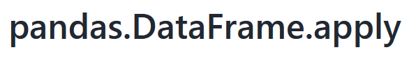
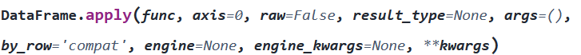
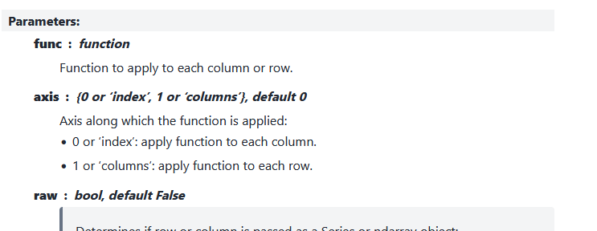
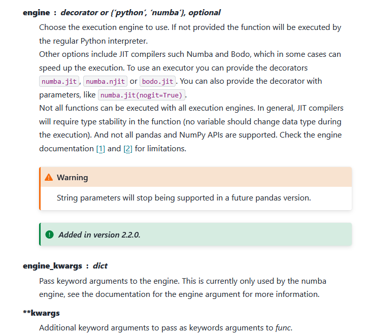
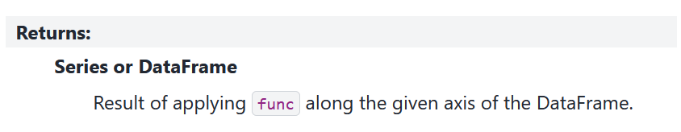

print("This is a simple program.")
one_plus_one = 1 + 1
print("1 + 1 =", one_plus_one)
if 1 + 1 == 2:
print("All tests passed.")
else:
print("Uh oh...")This is a simple program.
1 + 1 = 2
All tests passed.The goal of this session is touch on the important programming concepts that often get missed in research-oriented tutorials (e.g. the software carpentries).
Part of the problem is that it takes a lot less Python to use the popular modules (e.g. pandas, numpy, matplotlib) than to develop them. This is the whole point: the modules exist so that you don’t need to be a developer.
However, when it comes to using them, the more you know about what’s going on behind-the-scenes, the more you’ll understand why things break and why things work. This is a skill you learn over time, but one that we’ll hopefully build up a bit today.
Important concepts for researchers include
DataFrame? What is a Figure or Axes object? What’s the difference between a function and a method?numpy)What is Python?
The answer is not as obvious as you might think. There are three things you might call Python:
It’s best seen by example. Let’s run a simple program,
print("This is a simple program.")
one_plus_one = 1 + 1
print("1 + 1 =", one_plus_one)
if 1 + 1 == 2:
print("All tests passed.")
else:
print("Uh oh...")This is a simple program.
1 + 1 = 2
All tests passed.What actually happens when you run it?
python with the input file simple_program.py.python simple_program.pypython3 simple_program.pypython interprets your ‘Python’ code for the computer, converting it into binary commands (1000101010…). It then interprets the binary output as something meaningful. This is why python is called the interpreter.So far so good. But how does the interpreter know what to do? Is the interpreter written in Python too?
No.
For most people, their interpreter is written in C and referred to as the CPython implementation. C is a compiled language, rather than an interpreted one. Before you run any C program, you must compile it into binary code as a separate step. This means it’s not dynamic but is suitable for programs.
All this is to say that Python can mean a few things. Here, I’ll stick to “Python” for the language and python for the program.
Find your Python interpreter / executable.
python3.exepythonSome places to look
miniforge3.
C:\Users\your_username\AppData\Local\miniforge3. You’ll need to unhide hidden folders./home/your_username/miniforge3/bin.../Python/binIf you used Miniconda, go to the envs folder in miniforge3. You might find another interpreter! It’s common to have many interpreters installed. Environment management can help mitigate side effects.
So, what is Python?
The Wikipedia answer is
Python is a high-level, general-purpose programming language that emphasizes code readability, simplicity, and ease-of-writing with the use of significant indentation, “plain English” naming, an extensive (“batteries-included”) standard library, and garbage collection. Python supports multiple programming paradigms but with an emphasis on object-oriented programming and dynamic typing. Source: Wikipedia
Let’s unpack this.
In our Python workshops we’ve been working with pandas DataFrames to manage data. We typically do something like
import pandas as pd
df = pd.read_csv("data/gapminder_all.csv")
df.head() | continent | country | gdpPercap_1952 | gdpPercap_1957 | gdpPercap_1962 | gdpPercap_1967 | gdpPercap_1972 | gdpPercap_1977 | gdpPercap_1982 | gdpPercap_1987 | ... | pop_1962 | pop_1967 | pop_1972 | pop_1977 | pop_1982 | pop_1987 | pop_1992 | pop_1997 | pop_2002 | pop_2007 | |
|---|---|---|---|---|---|---|---|---|---|---|---|---|---|---|---|---|---|---|---|---|---|
| 0 | Africa | Algeria | 2449.008185 | 3013.976023 | 2550.816880 | 3246.991771 | 4182.663766 | 4910.416756 | 5745.160213 | 5681.358539 | ... | 11000948.0 | 12760499.0 | 14760787.0 | 17152804.0 | 20033753.0 | 23254956.0 | 26298373.0 | 29072015.0 | 31287142 | 33333216 |
| 1 | Africa | Angola | 3520.610273 | 3827.940465 | 4269.276742 | 5522.776375 | 5473.288005 | 3008.647355 | 2756.953672 | 2430.208311 | ... | 4826015.0 | 5247469.0 | 5894858.0 | 6162675.0 | 7016384.0 | 7874230.0 | 8735988.0 | 9875024.0 | 10866106 | 12420476 |
| 2 | Africa | Benin | 1062.752200 | 959.601080 | 949.499064 | 1035.831411 | 1085.796879 | 1029.161251 | 1277.897616 | 1225.856010 | ... | 2151895.0 | 2427334.0 | 2761407.0 | 3168267.0 | 3641603.0 | 4243788.0 | 4981671.0 | 6066080.0 | 7026113 | 8078314 |
| 3 | Africa | Botswana | 851.241141 | 918.232535 | 983.653976 | 1214.709294 | 2263.611114 | 3214.857818 | 4551.142150 | 6205.883850 | ... | 512764.0 | 553541.0 | 619351.0 | 781472.0 | 970347.0 | 1151184.0 | 1342614.0 | 1536536.0 | 1630347 | 1639131 |
| 4 | Africa | Burkina Faso | 543.255241 | 617.183465 | 722.512021 | 794.826560 | 854.735976 | 743.387037 | 807.198586 | 912.063142 | ... | 4919632.0 | 5127935.0 | 5433886.0 | 5889574.0 | 6634596.0 | 7586551.0 | 8878303.0 | 10352843.0 | 12251209 | 14326203 |
5 rows × 38 columns
We’re going to study this example closely.
import pandas as pdIn the first line, we import the module. Behind-the-scenes, Python searches certain (somewhat mysterious) locations on your computer for a folder called pandas.
Find the pandas module and open the __init__.py file.
pkgs or libpandas (or something similar)__init__.pyThe __init__.py file gets run when you import the module. It’s usually full of other import statements to access the rest of the module and function/class definitions. We’ll come back to this.
df = pd.read_csv("data/gapminder.csv")This is the simplest line.
df = assigns the output of the right hand side to the variable df.pd.read_csv(...) is a function inside the pandas module. The . means “look inside”pd.read_csv() is a complicated function, but we can see its definition(s) explicitly—they’re in the module. Go to pandas/io/parsers/readers.py and search for def read_csv(). That’s the code that runs.
df.head()The last line, df.head() prints the first five rows in the dataframe df. There are three distinct elements:
df – the dataframe. – the dot operatorhead() – the functionWhat’s the difference between
head(df)
pd.head(df)
df.head()The main difference is where head lives.
head(df) assumes that head lives in the global namespace. This happens when
from some_module import head (or from some_module import headache as head)pd.head(df) assumes that head lives in the pandas module, like read_csv.df.head() assumes that head lives *inside the variable*df`.How can a function live inside a variable? Object-oriented programming.
What is a pandas DataFrame?
According to pandas
Two-dimensional, size-mutable, potentially heterogeneous tabular data.
In other words, a spreadsheet.
That answer might satisfy the data scientist but won’t satisfy the computer scientist. One could instead answer
A Python container of Series objects
We would need to define the Series too:
A Python array of single-type (homogenous) data
where by array we mean 1D container (like a list).
This still doesn’t really answer the question. What is it? Is it a list? A dictionary?
No, and no. It’s a custom-made variable type, which uses lists but is not a list. The pandas developers have taken the nuts and bolts of Python to design their own variable.
However, there’s an important ingredient which let’s them do this that we have not learnt yet: the class. In essence, a pandas DataFrame is a class.
In the Wikipedia definition before, we saw that
… Python supports multiple programming paradigms but with an emphasis on object-oriented programming and dynamic typing.
Classes enable object-oriented programming.
The following imagesource, is a schematic example of a class
This class, Button, has six variables (static) and four functions (dynamic). All instances of Button (e.g. red_button, blue_button) will have an xposition and a function draw(), but the actual values may differ. It’s Platonic programming.
Let’s code up the button class in Python. We won’t go over all the details, The Python Tutorial is excellent (but concise).
Classes are a bit like function definitions.
class Name: indicates the class definition is beginning for the class Name. Classes in Python are usually CapWords.ysize=3.def __init__(...) is run when you initialise an instanceself refers to ‘the current instance’ - whatever you name it.self as the first argument. When used, self is left out.class Button:
ysize = 3
def __init__(self, xpos, ypos, label="", listeners=None):
self.xsize = len(label) + 4
self.xposition = xpos
self.yposition = ypos
self.label_text = label
self.inerested_listeners = listeners
def draw(self):
print("-" * self.xsize)
print("|", self.label_text, "|")
print("-" * self.xsize)
def press(self):
print("beep")
def register_callback(self):
print("Press button later...")
return self.press
def unregister_callback(self):
raise NotImplementedError()Everything defined within the class lives inside the instances. To make it,
my_button = Button(0, 0, "STOP")We can view the variables inside my_button:
my_button.xsize8print(my_button.ysize)3print(my_button.label_text)STOPWe can run the functions
my_button.draw()--------
| STOP |
--------my_button.press()beepFunctions and variables that live inside a class/object are called methods and attributes.
xsize)draw())We can have multiple buttons
blue_button = Button(4, 4, "BLUE")
red_button = Button(-4, -4, "RED")
blue_button.draw()
red_button.draw()--------
| BLUE |
--------
-------
| RED |
-------Finally, Python recognises that this is a new variable type:
type(blue_button)__main__.ButtonReturning to pandas, this is all that a DataFrame is. A big, fancy class.
Find where the pandas DataFrame class is defined.
Hint: run type(pd.DataFrame()) to see where it’s defined…
From here, let’s move to some practical tips given all this background.
Classes can change the way you program by making changes in place. This is, practically, what object-oriented programming often looks like. Instead of running external functions to make changes to your variables, you run internal ones.
Let’s look at an example using built-in Python code. We’ll start by making a list:
fruits = ["apple", "banana", "cherry"]Remember, fruits is an instance of the list class. (list should really be List, but for historical reasons, it’s not).
Many list methods are in-place, meaning they don’t return their object, but do modify it behind-the-scenes.
append_output = fruits.append("durian")
print(fruits)
print(append_output)['apple', 'banana', 'cherry', 'durian']
NoneThis means that you could have lots of lines of code without an assignment operator = that do modify variables:
fruits.append("banana")
fruits.remove("cherry")
fruits.reverse()
print(fruits.index("apple"))
print(fruits)3
['banana', 'durian', 'banana', 'apple']It’s a different style, and you don’t have to do it, but you should know that it can be done and that other people do!
The best way to use a package is to consult its documentation. However, documentation is often written as a reference, not a tutorial. It’s important to have a good grasp of how documentation works.
Take a look at the pandas API. It’s structured for convenience. In the DataFrame section you’ll see an overview of everything defined inside class DataFrame(...:
Let’s look at a rather complicated method, pandas.DataFrame.apply, and unpack the documentation.

The title, pandas.DataFrame.apply, tells us that apply lives inside a DataFrame object, which is a class (we can assume based on CapWords) defined in the pandas module.
This means that apply is a method or attribute of all DataFrame objects.

The signature tells us a few things.
apply is a method, not an attribute, because the parentheses apply(...) indicate that it is callable - i.e., a function. Later down we also see that it has a return section (which only functions have).func has no default value, so we must provide it.axis=0), so they are optional.**kwargs captures keyword arguments that are provided but aren’t in the signature.In a succinct way, we have almost all teh information we need to use apply.
Apply a function along an axis of the DataFrame.
Objects passed to the function are Series objects whose index is either the DataFrame’s index (
axis=0) or the DataFrame’s columns (axis=1). By default (result_type=None), the final return type is inferred from the return type of the applied function. Otherwise, it depends on the result_type argument. The return type of the applied function is inferred based on the first computed result obtained after applying the function to a Series object.
The description gives us plain-language explanations of the function’s behaviour. Usually things to look out for, general and special behaviour, and other important information is contained here. Typically, the description refers to parameters which are more systematically outlined lower down

…various other parameters…

The parameter list gives a detailed account of each parameter, included the expected input types and default values.
For example, we see that
0 or 'index') or (1 or 'columns'), defaulting to0`bool type (True or False), defaulting to FalseThe last description, kwargs, tells us that any additional keyword arguments (of the form keyword=value, e.g. x=1) will get passed to the function provided in func. This is a common procedure in high level modules and important to understand.

The returns section describes what the function outputs. We see that apply returns a Series or DataFrame which contains the result of applying func to the DataFrame.
The remainder of the documentation is supplementary. Usually some additional notes are provided, along with some useful examples.
Go through the following objects and try to identify
The objects are
pandas.DataFrame.columnspandas.DataFrame.infosort (note: this is not in pandas)matplotlib.pyplot.plotHaving an understanding of this file structure makes handling errors easier. Let’s create a complicated error. This will also show us how pandas actually works.
df = pd.DataFrame()
# Utterly meaningless code (apply attempts to apply a function across rows/cols)
df.apply(pd.DataFrame())--------------------------------------------------------------------------- ValueError Traceback (most recent call last) Cell In[15], line 4 1 df = pd.DataFrame() 3 # Utterly meaningless code (apply attempts to apply a function across rows/cols) ----> 4 df.apply(pd.DataFrame()) File ~/ResBaz26/.venv/lib/python3.10/site-packages/pandas/core/frame.py:10401, in DataFrame.apply(self, func, axis, raw, result_type, args, by_row, engine, engine_kwargs, **kwargs) 10387 from pandas.core.apply import frame_apply 10389 op = frame_apply( 10390 self, 10391 func=func, (...) 10399 kwargs=kwargs, 10400 ) > 10401 return op.apply().__finalize__(self, method="apply") File ~/ResBaz26/.venv/lib/python3.10/site-packages/pandas/core/apply.py:873, in FrameApply.apply(self) 869 if self.engine == "numba": 870 raise NotImplementedError( 871 "the 'numba' engine doesn't support lists of callables yet" 872 ) --> 873 return self.apply_list_or_dict_like() 875 # all empty 876 if len(self.columns) == 0 and len(self.index) == 0: File ~/ResBaz26/.venv/lib/python3.10/site-packages/pandas/core/apply.py:628, in Apply.apply_list_or_dict_like(self) 625 kwargs = self.kwargs 627 if is_dict_like(func): --> 628 result = self.agg_or_apply_dict_like(op_name="apply") 629 else: 630 result = self.agg_or_apply_list_like(op_name="apply") File ~/ResBaz26/.venv/lib/python3.10/site-packages/pandas/core/apply.py:766, in NDFrameApply.agg_or_apply_dict_like(self, op_name) 762 selection = None 763 result_index, result_data = self.compute_dict_like( 764 op_name, obj, selection, kwargs 765 ) --> 766 result = self.wrap_results_dict_like(obj, result_index, result_data) 767 return result File ~/ResBaz26/.venv/lib/python3.10/site-packages/pandas/core/apply.py:531, in Apply.wrap_results_dict_like(self, selected_obj, result_index, result_data) 528 keys_to_use = ktu 530 axis: AxisInt = 0 if isinstance(obj, ABCSeries) else 1 --> 531 result = concat( 532 {k: results[k] for k in keys_to_use}, 533 axis=axis, 534 keys=keys_to_use, 535 ) 536 elif any(is_ndframe): 537 # There is a mix of NDFrames and scalars 538 raise ValueError( 539 "cannot perform both aggregation " 540 "and transformation operations " 541 "simultaneously" 542 ) File ~/ResBaz26/.venv/lib/python3.10/site-packages/pandas/core/reshape/concat.py:382, in concat(objs, axis, join, ignore_index, keys, levels, names, verify_integrity, sort, copy) 379 elif copy and using_copy_on_write(): 380 copy = False --> 382 op = _Concatenator( 383 objs, 384 axis=axis, 385 ignore_index=ignore_index, 386 join=join, 387 keys=keys, 388 levels=levels, 389 names=names, 390 verify_integrity=verify_integrity, 391 copy=copy, 392 sort=sort, 393 ) 395 return op.get_result() File ~/ResBaz26/.venv/lib/python3.10/site-packages/pandas/core/reshape/concat.py:445, in _Concatenator.__init__(self, objs, axis, join, keys, levels, names, ignore_index, verify_integrity, copy, sort) 442 self.verify_integrity = verify_integrity 443 self.copy = copy --> 445 objs, keys = self._clean_keys_and_objs(objs, keys) 447 # figure out what our result ndim is going to be 448 ndims = self._get_ndims(objs) File ~/ResBaz26/.venv/lib/python3.10/site-packages/pandas/core/reshape/concat.py:507, in _Concatenator._clean_keys_and_objs(self, objs, keys) 504 objs_list = list(objs) 506 if len(objs_list) == 0: --> 507 raise ValueError("No objects to concatenate") 509 if keys is None: 510 objs_list = list(com.not_none(*objs_list)) ValueError: No objects to concatenate
This code is obviously broken, but the error message and traceback are unclear. They should read “cannot apply empty DataFrame to empty DataFrame” or something like that, but this case hasn’t received much attention.
How would you read this traceback?
Let’s work through it.
ValueError: No objects to concatenateThis is the error that was raised at the bottom of the Traceback (the line raise ValueError("No objects to concatenate")). Since we weren’t trying to concatenate, something deeper is the problem.
File "/home/uqcwest5/ResBaz26/button.py", line 39, in <module>
df.apply(pd.DataFrame())This is our broken line. If you can’t see the problem, then keep digging.
File "/home/uqcwest5/ResBaz26/.venv/lib/python3.10/site-packages/pandas/core/frame.py", line 10401, in apply
return op.apply().__finalize__(self, method="apply")This is the file where DataFrame.apply() is defined. The error occurs in line 10401, with the function __finalize__, which lives in the output of the function op.apply() (whatever op is).
File "/home/uqcwest5/ResBaz26/.venv/lib/python3.10/site-packages/pandas/core/apply.py", line 628, in apply_list_or_dict_like
result = self.agg_or_apply_dict_like(op_name="apply")
File "/home/uqcwest5/ResBaz26/.venv/lib/python3.10/site-packages/pandas/core/apply.py", line 766, in agg_or_apply_dict_like
result = self.wrap_results_dict_like(obj, result_index, result_data)
File "/home/uqcwest5/ResBaz26/.venv/lib/python3.10/site-packages/pandas/core/apply.py", line 531, in wrap_results_dict_like
result = concat(A series of function calls in the apply.py file. The last one calls the function concat(..., which is elsewhere (and the part that breaks)
File "/home/uqcwest5/ResBaz26/.venv/lib/python3.10/site-packages/pandas/core/reshape/concat.py", line 382, in concat
op = _Concatenator(
File "/home/uqcwest5/ResBaz26/.venv/lib/python3.10/site-packages/pandas/core/reshape/concat.py", line 445, in __init__
objs, keys = self._clean_keys_and_objs(objs, keys)A _Concatenator( class is instantiated via the __init__ function in concat.py, line 445. In initialising the (non-public) object, the internal, attached function _clean_keys_and_objs raises the error.
Object naming should be intentional in Python, and usually communicates different purposes for the variable. PEP8 has a comprehensive overview of style guidelines, here are a few:
lowercase_with_underscores for variables and functionsUPPERCASE_WITH_UNDERSCORES for (intended) constantsCapWords for classes_leading_underscore for non-public functions__dunder__ for magic functions__dunder_leading to avoid clashesIn the _Concatenator example, this is a non-public class, intended for internal pandas use only and subject to change.
If we were pandas developers, we could now go and fix the error in concat.py. However, since it’s our code that’s broken, we should solve that first.
Given that, at the end of the day, pandas DataFrames are just made out of built-in Python objects (e.g. lists) anyway, is there any real advantage to using a DataFrame? Why not just a nested list, or dictionary:
df = {"col1": [1,2,3,4,5], "col2": [6,7,8,9,10]}One of the advantages is efficiency: pandas has been designed to be efficient.
A common task is doing the “same thing” to every row/column. Returning to the gapminder dataset, let’s isolate the “country” column (Series):
df = pd.read_csv("data/gapminder_all.csv")
countries = df["country"]
countries0 Algeria
1 Angola
2 Benin
3 Botswana
4 Burkina Faso
...
137 Switzerland
138 Turkey
139 United Kingdom
140 Australia
141 New Zealand
Name: country, Length: 142, dtype: objectOur goal: Create a new Series where each row contains the length of each country (name).
We’ll do it via four different approaches:
applyWe’ll time each option as we go to see which is quickest. Let’s also make our Series really big, so we feel it.
# Extend the country series
extended_country = pd.concat([df["country"]] * 100)
# Create new dataframe
countries = pd.DataFrame({"name": extended_country, "length": pd.Series()})To time things, we’ll need to use the built-in time module. Let’s create our own timer with a basic Timer class.
from time import time
class Timer:
def __init__(self):
pass
def start(self):
self.t0 = time()
def stop(self):
print(round(time() - self.t0, 4), "s")
t = Timer()t.start()
countries["length"] = countries["name"].str.len()
t.stop()0.0034 sapplyt.start()
countries["length"] = countries["name"].apply(len)
t.stop()0.0019 st.start()
countries["length"] = [len(s) for s in countries["name"]]
t.stop()0.0027 st.start()
lengths = []
for i, row in countries.iterrows():
lengths.append(len(row["name"]))
countries["length"] = lengths
t.stop()0.2279 s.loct.start()
for i, country in enumerate(countries["name"]):
countries.loc[i, "length"] = len(country)
t.stop()5.7988 sSo what can we conclude?
.apply() and built-in list comprehensions are just as quick as each other.
len, we’ll find that vectorisation is the quickest. It’s also the simplest.loc is much slower.For large datasets, using dedicated pandas function is best.
As a final activity, to round out some of the things we’ve done, let’s create some documentation ourselves.
In the Timer function, provide concise documentation that describes the behaviour of
Timer classstart functionstop functionYou should provide the documentation in triple-quoted blocks directly below the class/function signatures, e.g.
class Timer:
"""documentation begins here
continues here
and ends here
"""
def __init__(self):
...{kind=link}